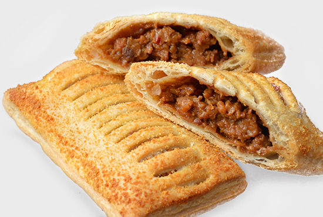
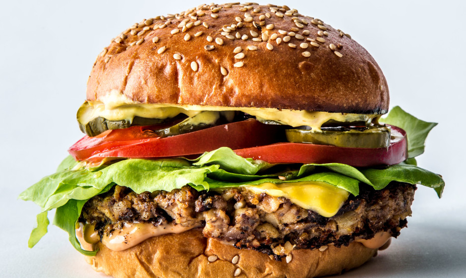
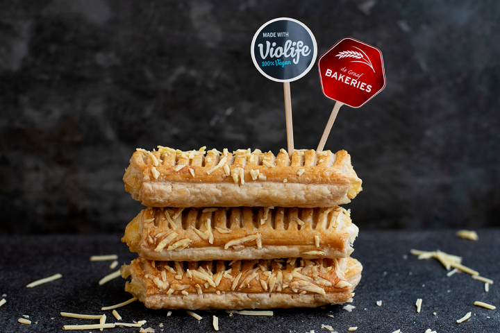

Hartige lekkernijen
Het eerste gedeelte van deze pagina zal ik wat voorbeelden van hartige lekkernijen geven.



Dit satebroodje smaakt erg lekker. Smaakt gegarandeerd naar meer.
Er zijn inmiddels zo veel verschillende soorten hamburgers te krijgen voor veganisten. Sommige zijn lekkerder en sommige minder lekker, maar dat heb je ook met echt vlees.
Het kaasbroodje van Violife schijnt erg lekker te zijn, maar ik moet eerlijk bekennen dat ik deze nog niet geproefd heb. Dit zal ik in een volgende update zeker bijwerken.